Redis 优化：键设计与批处理
Redis高级篇之最佳实践
今日内容
- Redis键值设计
- 批处理优化
- 服务端优化
- 集群最佳实践
1、Redis键值设计
1.1、优雅的key结构
Redis的Key虽然可以自定义，但最好遵循下面的几个最佳实践约定：
- 遵循基本格式：[业务名称]:[数据名]:[id]
- 长度不超过44字节
- 不包含特殊字符
例如：我们的登录业务，保存用户信息，其key可以设计成如下格式：
[原笔记图片附件缺失：.\Redis高级篇之最佳实践.assets\image-20220521120213631.png]
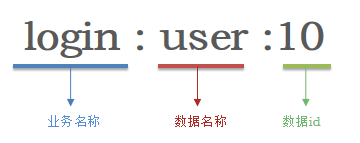
这样设计的好处：
可读性强
避免key冲突
方便管理
更节省内存： key是string类型，底层编码包含
int
embstr (连续编码 < 4字节)
raw(embstr增大 实现指针转移)
三种。embstr在小于44字节使用，采用连续内存空间，内存占用更小。当字节数大于44字节时，会转为raw模式存储，在raw模式下，内存空间不是连续的，而是采用一个指针指向了另外一段内存空间，在这段空间里存储SDS内容，这样空间不连续，访问的时候性能也就会收到影响，还有可能产生内存碎片
使用 object encoding key 名 . 实现查看 存储的格式 ;
字节大小的限制 是由 redis 的版本号 实现的控制的 ;
[原笔记图片附件缺失：.\Redis高级篇之最佳实践.assets\image-20220521122320482.png]
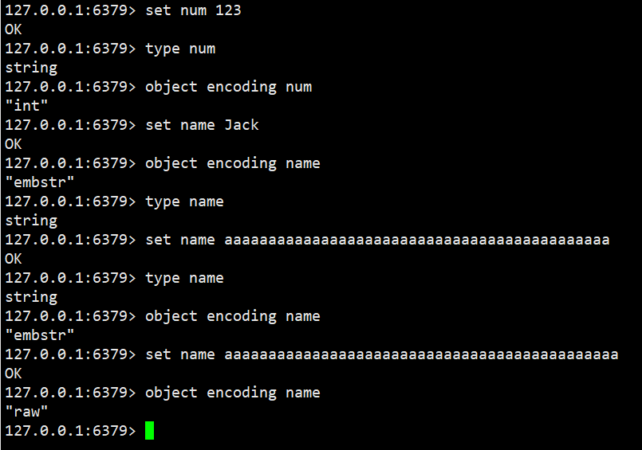
1.2、拒绝BigKey
BigKey通常以Key的大小和Key中成员的数量来综合判定，例如：
- Key本身的数据量过大：一个String类型的Key，它的值为5 MB
- Key中的成员数过多：一个ZSET类型的Key，它的成员数量为10,000个
- Key中成员的数据量过大：一个Hash类型的Key，它的成员数量虽然只有1,000个但这些成员的Value（值）总大小为100 MB
那么如何判断元素的大小呢？redis也给我们提供了命令
memory usage key : 查看key的大小 ; --> 但这种命令的CPU 的使用率巨高 ;
实际预估 大小 就行
[原笔记图片附件缺失：.\Redis高级篇之最佳实践.assets\image-20220521124650117.png]
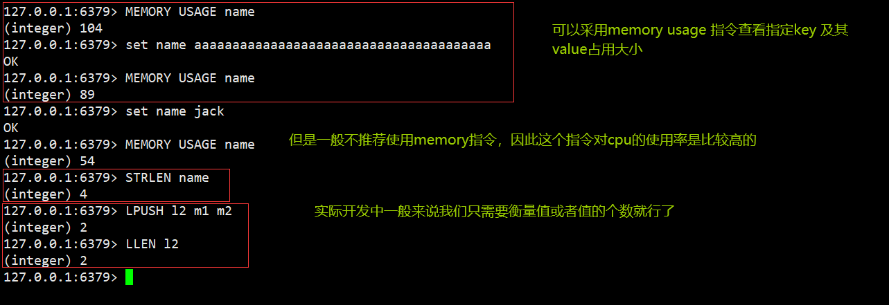
推荐值：
- 单个key的value小于10KB
- 对于集合类型的key，建议元素数量小于1000
1.2.1、BigKey的危害
网络阻塞
对BigKey执行读请求时，少量的QPS就可能导致带宽使用率被占满，导致Redis实例，乃至所在物理机变慢
数据倾斜
BigKey所在的Redis实例内存使用率远超其他实例，无法使数据分片的内存资源达到均衡
Redis阻塞
对元素较多的hash、list、zset等做运算会耗时较旧，使主线程被阻塞
CPU压力
对BigKey的数据序列化和反序列化会导致CPU的使用率飙升，影响Redis实例和本机其它应用
1.2.2、如何发现BigKey
①redis-cli --bigkeys
利用redis-cli提供的--bigkeys参数，可以遍历分析所有key，并返回Key的整体统计信息与每个数据的Top1的big key
命令：redis-cli -a 密码 --bigkeys
[原笔记图片附件缺失：.\Redis高级篇之最佳实践.assets\image-20220521133359507.png]
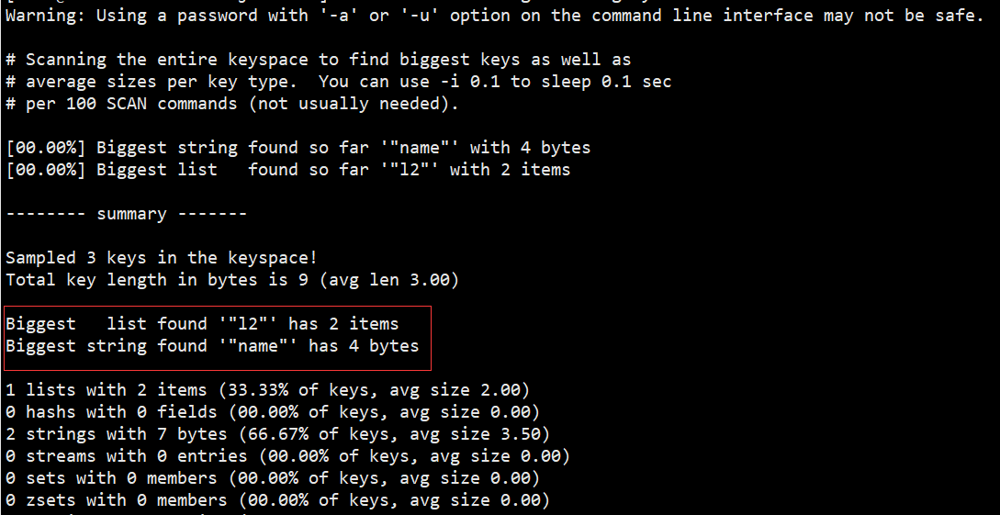
②scan扫描
自己编程，利用scan扫描Redis中的所有key，利用strlen、hlen等命令判断key的长度（此处不建议使用MEMORY USAGE）
SCAN 0 --> 默认返回全部的 key ----> 不断使用 SCAN 移动光标 再到 0 的时候 就可以实现扫描完全 了;
[原笔记图片附件缺失：.\Redis高级篇之最佳实践.assets\image-20220521133703245.png]
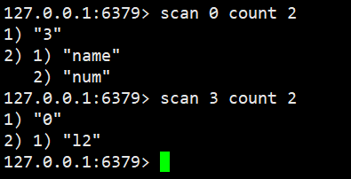
scan 命令调用完后每次会返回2个元素，第一个是下一次迭代的光标，第一次光标会设置为0，当最后一次scan 返回的光标等于0时，表示整个scan遍历结束了，第二个返回的是List，一个匹配的key的数组
import com.heima.jedis.util.JedisConnectionFactory;
import org.junit.jupiter.api.AfterEach;
import org.junit.jupiter.api.BeforeEach;
import org.junit.jupiter.api.Test;
import redis.clients.jedis.Jedis;
import redis.clients.jedis.ScanResult;
import java.util.HashMap;
import java.util.List;
import java.util.Map;
public class JedisTest {
private Jedis jedis;
@BeforeEach
void setUp() {
// 1.建立连接
// jedis = new Jedis("192.168.150.101", 6379);
jedis = JedisConnectionFactory.getJedis();
// 2.设置密码
jedis.auth("123321");
// 3.选择库
jedis.select(0);
}
final static int STR_MAX_LEN = 10 * 1024;
final static int HASH_MAX_LEN = 500;
@Test
void testScan() {
int maxLen = 0;
long len = 0;
String cursor = "0";
do {
// 扫描并获取一部分key
ScanResult<String> result = jedis.scan(cursor);
// 记录cursor
cursor = result.getCursor();
List<String> list = result.getResult();
if (list == null || list.isEmpty()) {
break;
}
// 遍历
for (String key : list) {
// 判断key的类型
String type = jedis.type(key);
switch (type) {
case "string":
len = jedis.strlen(key);
maxLen = STR_MAX_LEN;
break;
case "hash":
len = jedis.hlen(key);
maxLen = HASH_MAX_LEN;
break;
case "list":
len = jedis.llen(key);
maxLen = HASH_MAX_LEN;
break;
case "set":
len = jedis.scard(key);
maxLen = HASH_MAX_LEN;
break;
case "zset":
len = jedis.zcard(key);
maxLen = HASH_MAX_LEN;
break;
default:
break;
}
if (len >= maxLen) {
System.out.printf("Found big key : %s, type: %s, length or size: %d %n", key, type, len);
}
}
} while (!cursor.equals("0"));
}
@AfterEach
void tearDown() {
if (jedis != null) {
jedis.close();
}
}
}
③第三方工具
- 利用第三方工具，如 Redis-Rdb-Tools 分析RDB快照文件，全面分析内存使用情况
- https://github.com/sripathikrishnan/redis-rdb-tools
④网络监控
- 自定义工具，监控进出Redis的网络数据，超出预警值时主动告警
- 一般阿里云搭建的云服务器就有相关监控页面
[原笔记图片附件缺失：.\Redis高级篇之最佳实践.assets\image-20220521140415785.png]
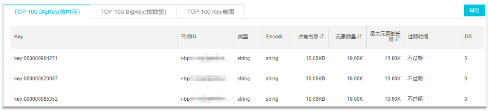
1.2.3、如何删除BigKey
BigKey内存占用较多，即便时删除这样的key也需要耗费很长时间，导致Redis主线程阻塞，引发一系列问题。
redis 3.0 及以下版本
如果是集合类型，则遍历BigKey的元素，先逐个删除子元素，最后删除BigKey
[原笔记图片附件缺失：.\Redis高级篇之最佳实践.assets\image-20220521140621204.png]
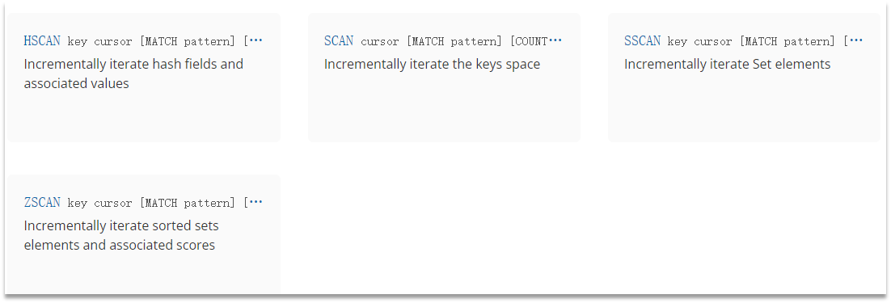
Redis 4.0以后
Redis在4.0后提供了异步删除的命令：unlink
1.3、恰当的数据类型
例1：比如存储一个User对象，我们有三种存储方式：
①方式一：json字符串
user:1 | {"name": "Jack", "age": 21} |
优点：实现简单粗暴
缺点：数据耦合，不够灵活
②方式二：字段打散
user:1:name | Jack |
user:1:age | 21 |
优点：可以灵活访问对象任意字段
缺点：占用空间大、没办法做统一控制
③方式三：hash（推荐）
user:1 | name | jack |
age | 21 |
优点：底层使用ziplist，空间占用小，可以灵活访问对象的任意字段
缺点：代码相对复杂
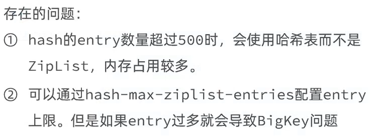
cofig get hash-max-ziplist-entries ; ---> 使用 set 实现扩容 ;
例2：假如有hash类型的key，其中有100万对field和value，field是自增id，这个key存在什么问题？如何优化？
key | field | value |
someKey | id:0 | value0 |
..... | ..... | |
id:999999 | value999999 |
存在的问题：
hash的entry数量超过500时，会使用哈希表而不是ZipList，内存占用较多
[原笔记图片附件缺失：.\Redis高级篇之最佳实践.assets\image-20220521142943350.png]
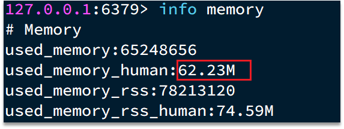
可以通过hash-max-ziplist-entries配置entry上限。但是如果entry过多就会导致BigKey问题
方案一
拆分为string类型
key | value |
id:0 | value0 |
..... | ..... |
id:999999 | value999999 |
存在的问题：
- string结构底层没有太多内存优化，内存占用较多
[原笔记图片附件缺失：.\Redis高级篇之最佳实践.assets\image-20220521143458010.png]
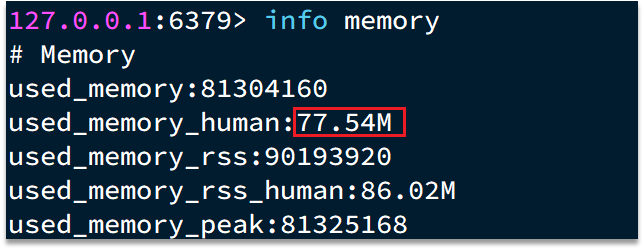
- 想要批量获取这些数据比较麻烦
方案二
拆分为小的hash，将 id / 100 作为key， 将id % 100 作为field，这样每100个元素为一个Hash
100 * 100 => 10000 * 100 --> 实现打散数据 , 便于 hash 的管理 ;
key | field | value |
key:0 | id:00 | value0 |
..... | ..... | |
id:99 | value99 | |
key:1 | id:00 | value100 |
..... | ..... | |
id:99 | value199 | |
.... | ||
key:9999 | id:00 | value999900 |
..... | ..... | |
id:99 | value999999 |
[原笔记图片附件缺失：.\Redis高级篇之最佳实践.assets\image-20220521144339377.png]
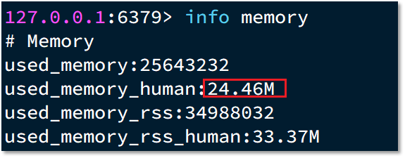
package com.heima.test;
import com.heima.jedis.util.JedisConnectionFactory;
import org.junit.jupiter.api.AfterEach;
import org.junit.jupiter.api.BeforeEach;
import org.junit.jupiter.api.Test;
import redis.clients.jedis.Jedis;
import redis.clients.jedis.Pipeline;
import redis.clients.jedis.ScanResult;
import java.util.HashMap;
import java.util.List;
import java.util.Map;
public class JedisTest {
private Jedis jedis;
@BeforeEach
void setUp() {
// 1.建立连接
// jedis = new Jedis("192.168.150.101", 6379);
jedis = JedisConnectionFactory.getJedis();
// 2.设置密码
jedis.auth("123321");
// 3.选择库
jedis.select(0);
}
@Test
void testSetBigKey() {
Map<String, String> map = new HashMap<>();
for (int i = 1; i <= 650; i++) {
map.put("hello_" + i, "world!");
}
jedis.hmset("m2", map);
}
@Test
void testBigHash() {
Map<String, String> map = new HashMap<>();
for (int i = 1; i <= 100000; i++) {
map.put("key_" + i, "value_" + i);
}
jedis.hmset("test:big:hash", map);
}
@Test
void testBigString() {
for (int i = 1; i <= 100000; i++) {
jedis.set("test:str:key_" + i, "value_" + i);
}
}
@Test
void testSmallHash() {
int hashSize = 100;
Map<String, String> map = new HashMap<>(hashSize);
for (int i = 1; i <= 100000; i++) {
int k = (i - 1) / hashSize;
int v = i % hashSize;
map.put("key_" + v, "value_" + v);
if (v == 0) {
jedis.hmset("test:small:hash_" + k, map);
}
}
}
@AfterEach
void tearDown() {
if (jedis != null) {
jedis.close();
}
}
}
1.4、总结
Key的最佳实践
固定格式 ：[业务名] : [数据名]:[id]
足够简短：不超过44字节
不包含特殊字符
Value的最佳实践
合理的拆分数据，拒绝BigKey
选择合适数据结构
Hash结构的entry数量不要超过1000
设置合理的超时时间
2、批处理优化
2.1、Pipeline
2.1.1、我们的客户端与redis服务器是这样交互的
单个命令的执行流程
[原笔记图片附件缺失：.\Redis高级篇之最佳实践.assets\image-20220521151459880.png]
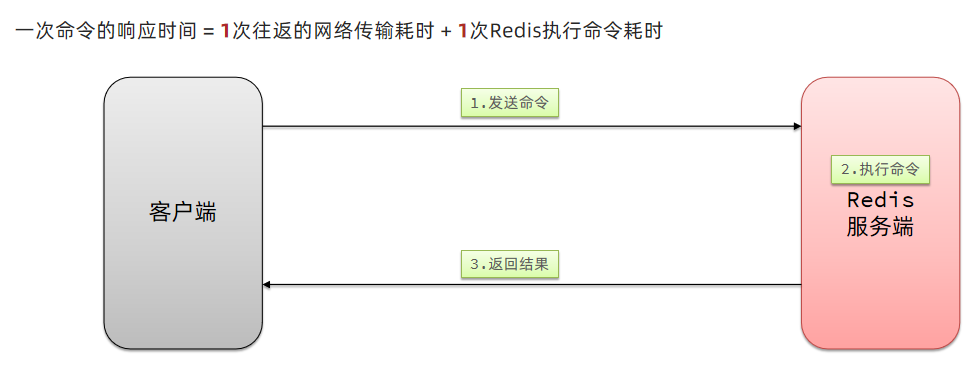
N条命令的执行流程
[原笔记图片附件缺失：.\Redis高级篇之最佳实践.assets\image-20220521151524621.png]
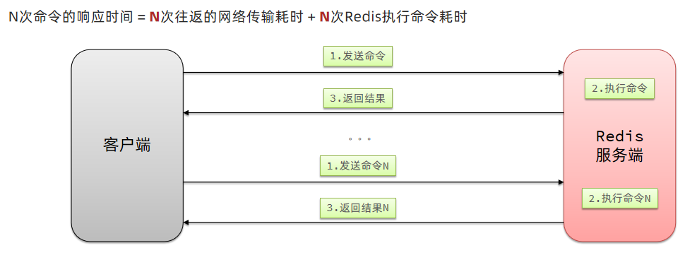
redis处理指令是很快的，主要花费的时候在于网络传输。于是乎很容易想到将多条指令批量的传输给redis
[原笔记图片附件缺失：.\Redis高级篇之最佳实践.assets\image-20220521151902080.png]
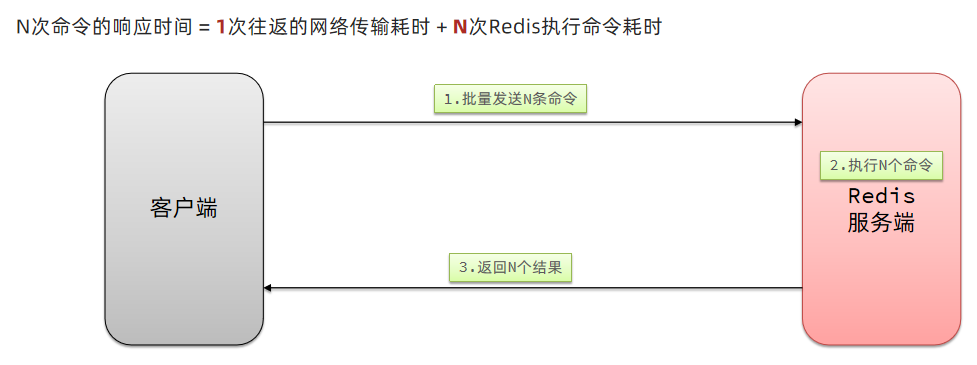
2.1.2、MSet
Redis提供了很多Mxxx这样的命令，可以实现批量插入数据，例如：
- mset -- > 字符串
- hmset --> 哈希
利用mset批量插入10万条数据
@Test
void testMxx() {
String[] arr = new String[2000];
int j;
long b = System.currentTimeMillis();
for (int i = 1; i <= 100000; i++) {
j = (i % 1000) << 1;
arr[j] = "test:key_" + i;
arr[j + 1] = "value_" + i;
if (j == 0) {
jedis.mset(arr);
}
}
long e = System.currentTimeMillis();
System.out.println("time: " + (e - b));
}
2.1.3、Pipeline
MSET虽然可以批处理，但是却只能操作部分数据类型，
因此如果有对复杂数据类型的批处理需要，建议使用Pipeline
@Test
void testPipeline() {
// 创建管道
Pipeline pipeline = jedis.pipelined();
long b = System.currentTimeMillis();
for (int i = 1; i <= 100000; i++) {
// 放入命令到管道
pipeline.set("test:key_" + i, "value_" + i);
if (i % 1000 == 0) {
// 每放入1000条命令，批量执行
pipeline.sync();
}
}
long e = System.currentTimeMillis();
System.out.println("time: " + (e - b));
}
2.2、集群下的批处理
如MSET或Pipeline这样的批处理需要在一次请求中携带多条命令，而此时如果Redis是一个集群，那批处理命令的多个key必须落在一个插槽中，否则就会导致执行失败。大家可以想一想这样的要求其实很难实现，因为我们在批处理时，可能一次要插入很多条数据，这些数据很有可能不会都落在相同的节点上，这就会导致报错了
这个时候，我们可以找到4种解决方案
[原笔记图片附件缺失：.\Redis高级篇之最佳实践.assets\1653126446641.png]
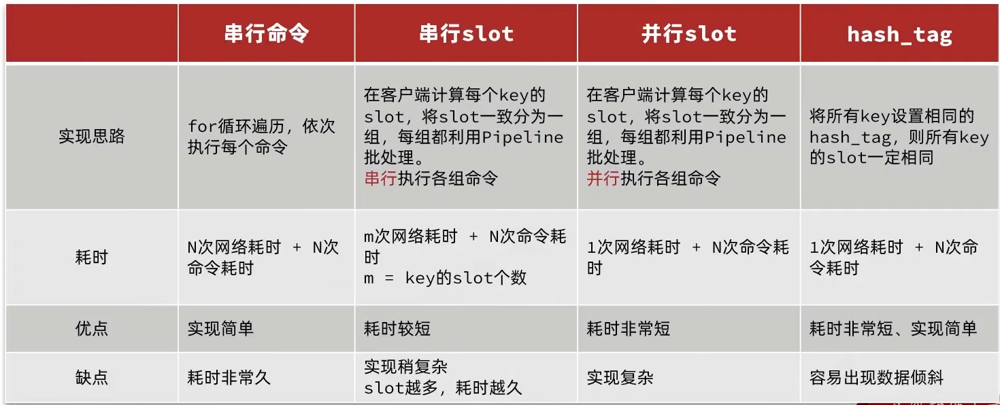
第一种方案：串行执行，所以这种方式没有什么意义，当然，执行起来就很简单了，缺点就是耗时过久。
第二种方案：串行slot，简单来说，就是执行前，客户端先计算一下对应的key的slot，一样slot的key就放到一个组里边，不同的，就放到不同的组里边，然后对每个组执行pipeline的批处理，他就能串行执行各个组的命令，这种做法比第一种方法耗时要少，但是缺点呢，相对来说复杂一点，所以这种方案还需要优化一下
第三种方案：并行slot，相较于第二种方案，在分组完成后串行执行，第三种方案，就变成了并行执行各个命令，所以他的耗时就非常短，但是实现呢，也更加复杂。
第四种：hash_tag，redis
计算key的slot的时候，其实是根据key的有效部分来计算的
通过这种方式就能一次处理所有的key，
这种方式耗时最短，实现也简单，但是如果通过操作key的有效部分，那么就会
导致所有的key都落在一个节点上，产生数据倾斜的问题，所以我们推荐使用第三种方式。
2.2.1 串行化执行代码实践
public class JedisClusterTest {
private JedisCluster jedisCluster;
@BeforeEach
void setUp() {
// 配置连接池
JedisPoolConfig poolConfig = new JedisPoolConfig();
poolConfig.setMaxTotal(8);
poolConfig.setMaxIdle(8);
poolConfig.setMinIdle(0);
poolConfig.setMaxWaitMillis(1000);
HashSet<HostAndPort> nodes = new HashSet<>();
nodes.add(new HostAndPort("192.168.150.101", 7001));
nodes.add(new HostAndPort("192.168.150.101", 7002));
nodes.add(new HostAndPort("192.168.150.101", 7003));
nodes.add(new HostAndPort("192.168.150.101", 8001));
nodes.add(new HostAndPort("192.168.150.101", 8002));
nodes.add(new HostAndPort("192.168.150.101", 8003));
jedisCluster = new JedisCluster(nodes, poolConfig);
}
@Test
void testMSet() {
jedisCluster.mset("name", "Jack", "age", "21", "sex", "male");
}
@Test
void testMSet2() {
Map<String, String> map = new HashMap<>(3);
map.put("name", "Jack");
map.put("age", "21");
map.put("sex", "Male");
//对Map数据进行分组。根据相同的slot放在一个分组
//key就是slot，value就是一个组
Map<Integer, List<Map.Entry<String, String>>> result = map.entrySet()
.stream()
.collect(Collectors.groupingBy(
entry -> ClusterSlotHashUtil.calculateSlot(entry.getKey()))
);
//串行的去执行mset的逻辑
for (List<Map.Entry<String, String>> list : result.values()) {
String[] arr = new String[list.size() * 2];
int j = 0;
for (int i = 0; i < list.size(); i++) {
j = i<<2;
Map.Entry<String, String> e = list.get(0);
arr[j] = e.getKey();
arr[j + 1] = e.getValue();
}
jedisCluster.mset(arr);
}
}
@AfterEach
void tearDown() {
if (jedisCluster != null) {
jedisCluster.close();
}
}
}
2.2.2 Spring集群环境下批处理代码
@Test
void testMSetInCluster() {
Map<String, String> map = new HashMap<>(3);
map.put("name", "Rose");
map.put("age", "21");
map.put("sex", "Female");
stringRedisTemplate.opsForValue().multiSet(map);
List<String> strings = stringRedisTemplate.opsForValue().multiGet(Arrays.asList("name", "age", "sex"));
strings.forEach(System.out::println);
}
原理分析
在RedisAdvancedClusterAsyncCommandsImpl 类中
首先根据slotHash算出来一个partitioned的map，map中的key就是slot，而他的value就是对应的对应相同slot的key对应的数据
通过 RedisFuture mset = super.mset(op);进行异步的消息发送
@Override
public RedisFuture<String> mset(Map<K, V> map) {
Map<Integer, List<K>> partitioned = SlotHash.partition(codec, map.keySet());
if (partitioned.size() < 2) {
return super.mset(map);
}
Map<Integer, RedisFuture<String>> executions = new HashMap<>();
for (Map.Entry<Integer, List<K>> entry : partitioned.entrySet()) {
Map<K, V> op = new HashMap<>();
entry.getValue().forEach(k -> op.put(k, map.get(k)));
RedisFuture<String> mset = super.mset(op);
executions.put(entry.getKey(), mset);
}
return MultiNodeExecution.firstOfAsync(executions);
}
3、服务器端优化-持久化配置
Redis的持久化虽然可以保证数据安全，但也会带来很多额外的开销，因此持久化请遵循下列建议：
用来做缓存的Redis实例尽量不要开启持久化功能 --> 安全性要求不高的 , 建议缓存放置一个实例 内部不实现 AOF 本地缓存 ;
建议关闭RDB持久化功能，使用AOF持久化 --> 命令可能会发生丢失 , 数据不安全
利用脚本定期在slave节点做RDB，实现数据备份 --> AOF体积很大 会常见重写, 合理设置rewrite 的大小
设置合理的rewrite阈值，避免频繁的bgrewrite - > 实现 缩身 数据库中的命令 ;
fsync --> 就是 刷盘
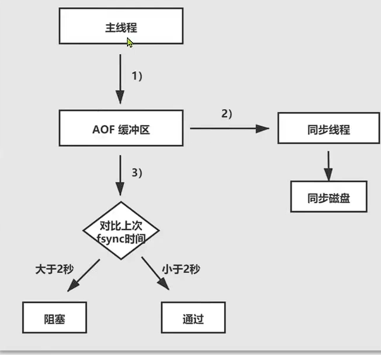
配置no-appendfsync-on-rewrite = yes，禁止在rewrite期间做aof，避免因AOF引起的阻塞
部署有关建议：
Redis实例的物理机要预留足够内存，应对fork和rewrite
单个Redis实例内存上限不要太大，例如4G或8G。可以加快fork的速度、减少主从同步、数据迁移压力
不要与CPU密集型应用部署在一起
不要与高硬盘负载应用一起部署。例如：数据库、消息队列
4、服务器端优化-慢查询优化
4.1 什么是慢查询
并不是很慢的查询才是慢查询，而是：在Redis执行时耗时超过某个阈值的命令，称为慢查询。
慢查询的危害：由于Redis是单线程的，所以当客户端发出指令后，他们都会进入到redis底层的queue来执行，如果此时有一些慢查询的数据，就会导致大量请求阻塞，从而引起报错，所以我们需要解决慢查询问题。
[原笔记图片附件缺失：.\Redis高级篇之最佳实践.assets\1653129590210.png]
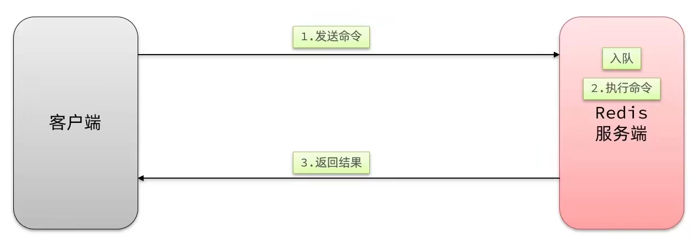
慢查询的阈值可以通过配置指定：
slowlog-log-slower-than：慢查询阈值，单位是微秒。默认是10000，建议1000
慢查询会被放入慢查询日志中，日志的长度有上限，可以通过配置指定：
slowlog-max-len：慢查询日志（本质是一个队列）的长度。默认是128，建议1000
[原笔记图片附件缺失：.\Redis高级篇之最佳实践.assets\1653130457771.png]
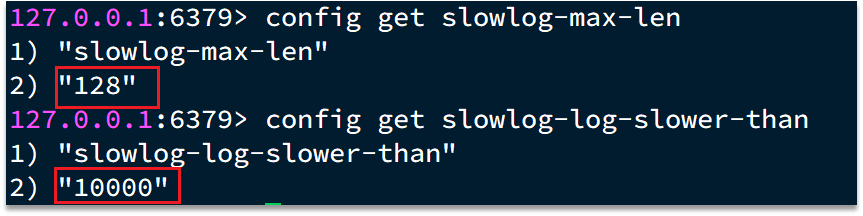
修改这两个配置可以使用：config set命令：
[原笔记图片附件缺失：.\Redis高级篇之最佳实践.assets\1653130475979.png]
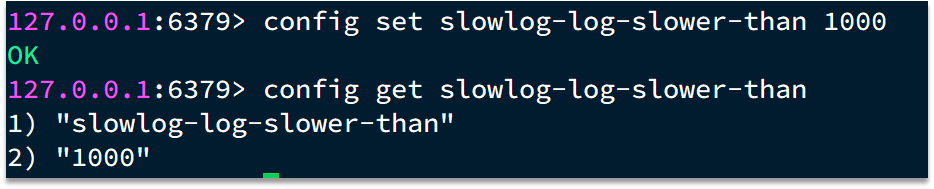
4.2 如何查看慢查询
知道了以上内容之后，那么咱们如何去查看慢查询日志列表呢：
- slowlog len：查询慢查询日志长度
- slowlog get [n]：读取n条慢查询日志
- slowlog reset：清空慢查询列表
[原笔记图片附件缺失：.\Redis高级篇之最佳实践.assets\1653130858066.png]
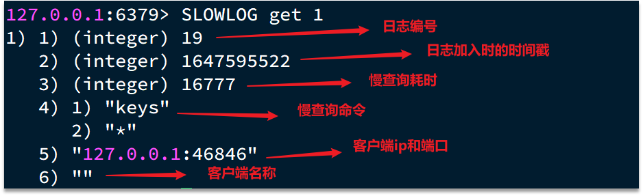
5、服务器端优化-命令及安全配置
安全可以说是服务器端一个非常重要的话题，如果安全出现了问题，那么一旦这个漏洞被一些坏人知道了之后，并且进行攻击，那么这就会给咱们的系统带来很多的损失，所以我们这节课就来解决这个问题。
SSH 基于非对称加密（公私钥）实现免密登录的核心就是：
公钥放在服务器（目标机器），私钥留在本地（客户端）。
登录时，客户端用私钥签名一个挑战，服务器用公钥验证签名，验证通过就允许登录，全程不需要输入密码。
所以 : 服务器 本身就要实现公钥保存 ;
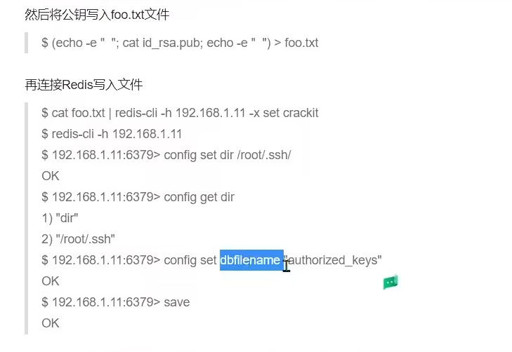
实现 ssh 持久化 内部创建的 文件 会自动创建 到目录 /root /.ssh 中去 ;
Redis会绑定在0.0.0.0:6379，这样将会将Redis服务暴露到公网上，而Redis如果没有做身份认证，会出现严重的安全漏洞.
漏洞重现方式：https://cloud.tencent.com/developer/article/1039000
为什么会出现不需要密码也能够登录呢，主要是Redis考虑到每次登录都比较麻烦
所以Redis就有一种ssh免秘钥登录的方式
生成一对公钥和私钥，私钥放在本地，公钥放在redis端，
当我们登录时服务器，再登录时候，他会去解析公钥和私钥，
如果没有问题，则不需要利用redis的登录也能访问，
这种做法本身也很常见，但是这里有一个前提，前提就是公钥必须保存在服务器上，才行，
但是Redis的漏洞在于在不登录的情况下，也能把秘钥送到Linux服务器，从而产生漏洞
漏洞出现的核心的原因有以下几点：
- Redis未设置密码
- 利用了Redis的config set命令动态修改Redis配置
- 使用了Root账号权限启动Redis
所以：如何解决呢？我们可以采用如下几种方案
为了避免这样的漏洞，这里给出一些建议：
- Redis一定要设置密码
- 禁止线上使用下面命令：keys、flushall、flushdb、config set等命令。可以利用rename-command禁用。 --> 可以直接禁止使用 前面列举的 命令;
- bind：限制网卡，禁止外网网卡访问
- 开启防火墙
- 不要使用Root账户启动Redis
- 尽量不是有默认的端口 6379 全天下人都知道 ,必须实现修改 ;
6、服务器端优化-Redis内存划分和内存配置
当Redis内存不足时，可能导致
Key频繁被删除、响应时间变长、QPS不稳定等问题。
当内存使用率达到90%以上时就需要我们警惕，并快速定位到内存占用的原因。
有关碎片问题分析
Redis底层分配并不是这个key有多大，他就会分配多大，而是有他自己的分配策略，比如8,16,20等等，假定当前key只需要10个字节，此时分配8肯定不够，那么他就会分配16个字节，多出来的6个字节就不能被使用，这就是我们常说的 碎片问题
进程内存问题分析：
这片内存，通常我们都可以忽略不计
缓冲区内存问题分析：
一般包括客户端缓冲区、AOF缓冲区、复制缓冲区等。客户端缓冲区又包括输入缓冲区和输出缓冲区两种。这部分内存占用波动较大，所以这片内存也是我们需要重点分析的内存问题。
内存占用 | 说明 |
数据内存 | 是Redis最主要的部分，存储Redis的键值信息。主要问题是BigKey问题、内存碎片问题 |
进程内存 | Redis主进程本身运⾏肯定需要占⽤内存，如代码、常量池等等；这部分内存⼤约⼏兆，在⼤多数⽣产环境中与Redis数据占⽤的内存相⽐可以忽略。 |
缓冲区内存 | 一般包括客户端缓冲区、AOF缓冲区、复制缓冲区等。客户端缓冲区又包括输入缓冲区和输出缓冲区两种。这部分内存占用波动较大，不当使用BigKey，可能导致内存溢出。 |
于是我们就需要通过一些命令，可以查看到Redis目前的内存分配状态：
- info memory：查看内存分配的情况
[原笔记图片附件缺失：.\Redis高级篇之最佳实践.assets\1653132073570.png] 
- memory xxx：查看key的主要占用情况
[原笔记图片附件缺失：.\Redis高级篇之最佳实践.assets\1653132098823.png]
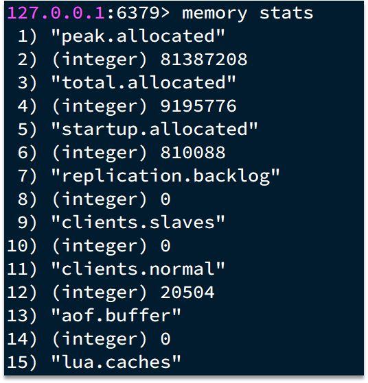
接下来我们看到了这些配置，最关键的缓存区内存如何定位和解决呢？
内存缓冲区常见的有三种：
- 复制缓冲区：主从复制的repl_backlog_buf(实现全部复制后存储新的变量)，如果太小可能导致频繁的全量复制，影响性能。通过replbacklog-size来设置，默认1mb
- AOF缓冲区：AOF刷盘之前的缓存区域，AOF执行rewrite的缓冲区。无法设置容量上限
- 客户端缓冲区：分为输入缓冲区和输出缓冲区，输入缓冲区最大1G且不能设置 , 超出缓冲区最大限制 1GB 自动实现端开连接 , 不接受任何请求 。输出缓冲区可以设置
以上复制缓冲区和AOF缓冲区 不会有问题，最关键就是客户端缓冲区的问题
客户端缓冲区：指的就是我们发送命令时，客户端用来缓存命令的一个缓冲区，也就是我们向redis输入数据的输入端缓冲区和redis向客户端返回数据的响应缓存区，输入缓冲区最大1G且不能设置，所以这一块我们根本不用担心，如果超过了这个空间，redis会直接断开，因为本来此时此刻就代表着redis处理不过来了，我们需要担心的就是输出端缓冲区
[原笔记图片附件缺失：.\Redis高级篇之最佳实践.assets\1653132410073.png]
我们在使用redis过程中，处理大量的big value，
默认 配置中没有任何大小限制 ;
那么会导致我们的输出结果过多，如果输出缓存区过大，会导致redis直接断开，而默认配置的情况下， 其实他是没有大小的，这就比较坑了，内存可能一下子被占满，会直接导致咱们的redis断开，所以解决方案有两个
1、设置一个大小
2、增加我们带宽的大小，避免我们出现大量数据从而直接超过了redis的承受能力
7、服务器端集群优化-集群还是主从
集群虽然具备高可用特性，能实现自动故障恢复，但是如果使用不当，也会存在一些问题：
- 集群完整性问题
- 集群带宽问题
- 数据倾斜问题
- 客户端性能问题
- 命令的集群兼容性问题
- lua和事务问题
问题1、在Redis的默认配置中，如果发现任意一个插槽不可用，则整个集群都会停止对外服务：
cluster-require-full-coverage 参数就是控制这个“熔断”机制的开关：
yes(默认值，强一致性)：只要有一个槽不可用，整个集群就停止对外服务，返回CLUSTERDOWN错误。no(高可用优先)： 关闭全槽覆盖检查。即使有槽不可用，其他正常的槽依然可以正常读写。这正是你需要的效果。
大家可以设想一下，如果有几个slot不能使用，那么此时整个集群都不能用了，我们在开发中，其实最重要的是可用性，所以需要把如下配置修改成no，即有slot不能使用时，我们的redis集群还是可以对外提供服务
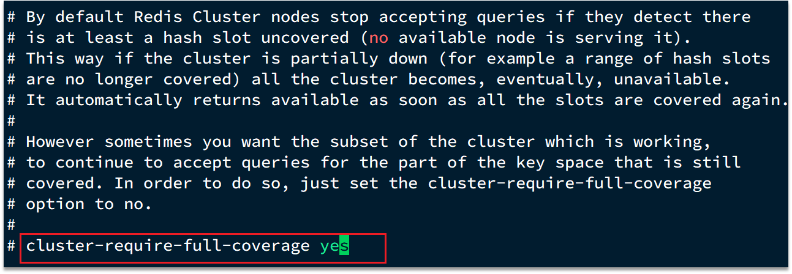
修改集群的配置文件 :
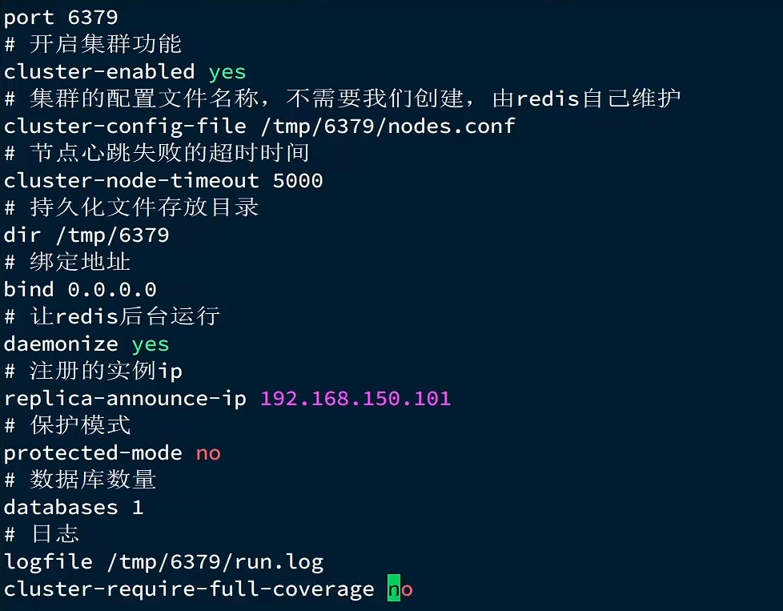
查看当前的redis 的运行状况 :
ps -ef | grep redis ==> 查看redis 后台 ;
创建集群 :
1.文件夹 + 配置文件 + 配置文件中的端口信息 + 启动
2.创建集群 + 可以使用下面的命令查看节点内部的配置
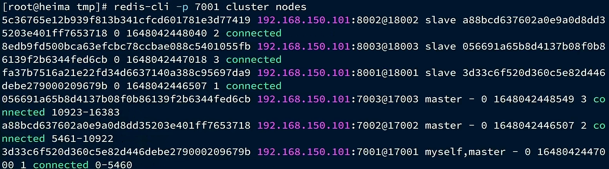
3.挂掉一对主从导致 插槽不完整, 部分槽会出现插槽失败 ;
问题2、集群带宽问题
集群节点之间会不断的互相Ping来确定集群中其它节点的状态。每次Ping携带的信息至少包括：
- 插槽信息
- 集群状态信息
集群中节点越多，集群状态信息数据量也越大，10个节点的相关信息可能达到1kb，此时每次集群互通需要的带宽会非常高，这样会导致集群中大量的带宽都会被ping信息所占用，这是一个非常可怕的问题，所以我们需要去解决这样的问题
解决途径：
- 避免大集群，集群节点数不要太多，最好少于1000，如果业务庞大，则建立多个集群。
- 避免在单个物理机中运行太多Redis实例
- 配置合适的cluster-node-timeout值 - -> 集群中节点之间保持联络的实践设置一定要合理适当延长
问题3、命令的集群兼容性问题
有关这个问题咱们已经探讨过了，当我们使用批处理的命令时，redis要求我们的key必须落在相同的slot上，然后大量的key同时操作时，是无法完成的，所以客户端必须要对这样的数据进行处理，这些方案我们之前已经探讨过了，所以不再这个地方赘述了。
问题4、lua和事务的问题
lua和事务都是要保证原子性问题，如果你的key不在一个节点，那么是无法保证lua的执行和事务的特性的，所以在集群模式是没有办法执行lua和事务的
那我们到底是集群还是主从
单体Redis（主从Redis）已经能达到万级别的QPS，并且也具备很强的高可用特性。如果主从能满足业务需求的情况下，所以如果不是在万不得已的情况下，尽量不搭建Redis集群
单体就可以抗住 数万级别的 QPS访问 , 具备高可用的 特性 , 80%~90% 公司都无法达到这个数量级别 .
单体可以上升 到 主从 , 业务不需求尽量不搭建 redis 集群
8、结束语
亲爱的小伙帮们辛苦啦，咱们有关redis的最佳实践到这里就讲解完毕了，期待小伙们学业有成~~~~